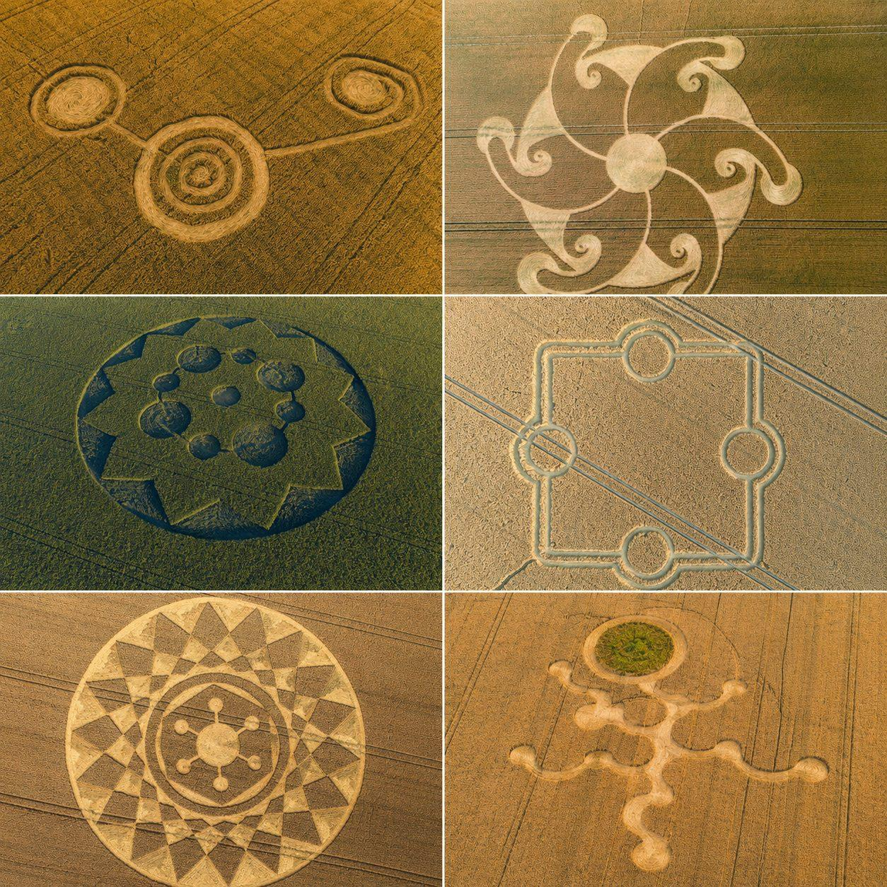

Cliché proof
The oldest screenshot in the UFO group chat: flattened wheat, blurry footage, absolute conviction.
The most cliché UFO proof onchain.
So cliché it became a meme. So memeable it became a coin.
UFO files are back in the news. We’re just reading the signs in the field.
The oldest screenshot in the UFO group chat: flattened wheat, blurry footage, absolute conviction.
Every disclosure headline adds another ring. The timeline points at the sky, the field answers back.
Circles inside circles inside jokes. Ancient mystery, modern posting velocity, zero lab coat required.

When the files drop, the timeline looks up. When the timeline looks up, the fields start speaking. When the fields speak, we read the signs in circles.
Made for memes, not investment advice.